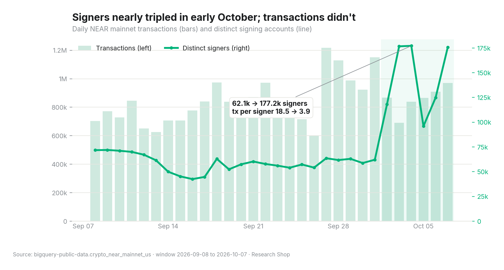
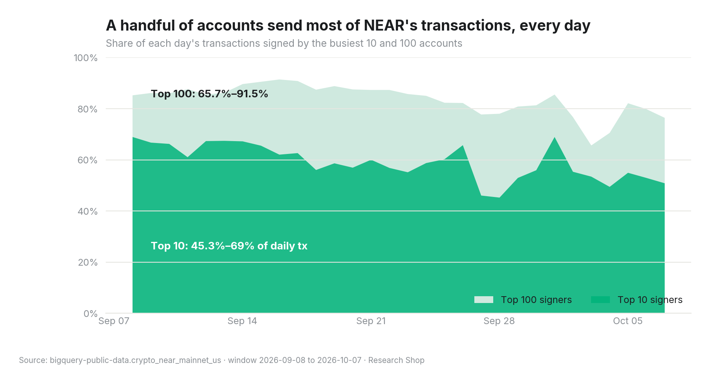
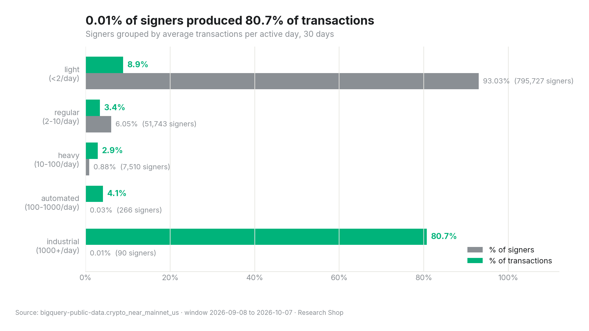
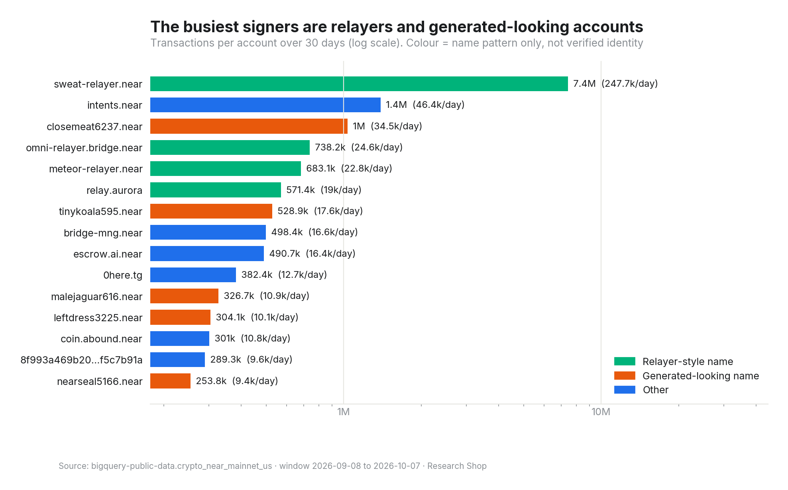

Research Shop sample report · Window 2026-09-08 to 2026-10-07 (30 days) · Every number below comes from the query results in this pack and can be re-run with make verify.
NEAR's raw transaction count measures automation, not people. A tiny set of signers produces the large majority of transactions. Most of them are relayers and infrastructure accounts that sign on behalf of many end users, so this is evidence of concentration, not proof of fake activity. Distinct signers is the better measure of users, and it moved sharply in early October.
sweat-relayer.near, sent 7,429,693 transactions, an average of 247,656 per day, active all 30 days. Other heavy hitters include intents.near (1,390,976), omni-relayer.bridge.near, meteor-relayer.near and relay.aurora. (q4)closemeat6237.near with 1,036,408 transactions, plus leftdress3225.near, malejaguar616.near and tinykoala595.near). Each was active all 30 days at 10,136 or more transactions per day. (q4) That pattern fits automated operation, but this report doesn't establish what these accounts are.sweat-relayer.near, meteor-relayer.near, relay.aurora and omni-relayer.bridge.near are relayer-style accounts, so a large part of the "automated" 80.7% may be real people whose activity is counted under one signer. Signer-level analysis undercounts users behind relayers. It doesn't prove the activity is fake.These are the next queries in the full deep-dive report.




| id | question | file |
|---|---|---|
| q1 | Daily transactions, distinct signers, transactions per signer | queries/q1_daily_activity.sql |
| q2 | Share of daily transactions from the top 10 / top 100 signers | queries/q2_concentration.sql |
| q3 | Signers and transactions by average daily activity bucket | queries/q3_signer_buckets.sql |
| q4 | 15 busiest signers | queries/q4_top_signers.sql |
Each query is bounded to a fixed block_date range and passed the safeguards (no relative dates, cost estimate before running). The SHA-256 hash of every result is in manifest.json.
# no Google account needed: re-hash the shipped results
make verify-cached
# re-run every query on BigQuery (your project pays, about 3 GB in total)
gcloud auth application-default login
make verify PROJECT=<your-gcp-project>
Generated 2026-11-02T13:04:28+00:00 from bigquery-public-data.crypto_near_mainnet_us. make verify re-runs each query and must reproduce these exactly.
| query | rows | result sha256 |
|---|---|---|
| q1_daily_activity | 30 | 0c049f8f929b60160c457391317c81d574d82305f170932338c050853254fe57 |
| q2_concentration | 30 | e7efbd908266179b0a7608bfc60e147882a853330cc05c5090d4eeebac0397a6 |
| q3_signer_buckets | 5 | 2133327d741d455519e1058ba68b194f64a83446232e2e6ec9ca1cb2ab541e53 |
| q4_top_signers | 15 | 2233ef9483e1f6670ea41c2afd4c598a2fb1e02a3021951122f19849d889cd06 |